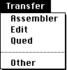

Assembler
Transfers, launching if necessary, the VAX assember.
Edit
Transfers, launching if necessary, the "Edit" editor.
Qued
Transfers, launching if necessary, the QED editor.
Other
Transfers, launching if necessary, the selected program.